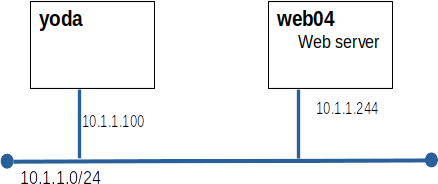

Hands-On Evaluation 4
Introduction
This evaluation must be completed in class
Grading:
Grading Scheme
| web04 built and patched | 1 |
| httpd | 3 |
| Kickstart | 3 |
| yum repo changes | 3 |
| Total | 10 |
Diagram

Part A: Install and configure httpd on web04
- set httpd to start on boot
- create a simple default html page that contains: Welcome to web04
- configure httpd to listen on 8888
- SELinux must remain in enforcing mode
- 8888/tcp must be allowed through the local firewall
- use firewalld as the firewall
- The grading script will run curl http://web04:8888
Part B: Kickstart
Modify default.ks on yoda so that every new system built contains an account for amita
- use the kickstart user command
- set amita's password to webpass
- amita's password must be hashed using the SHA512 algorythm
- use your 10 digit student number as the salt
Part C: YUM repo changes
- add cpio-2.12-10.el8.x86_64.rpm to the miniPatch repo on yoda
- run yum clean all on web04 to ensure that you get the latest repo data
- apply the patch to web04